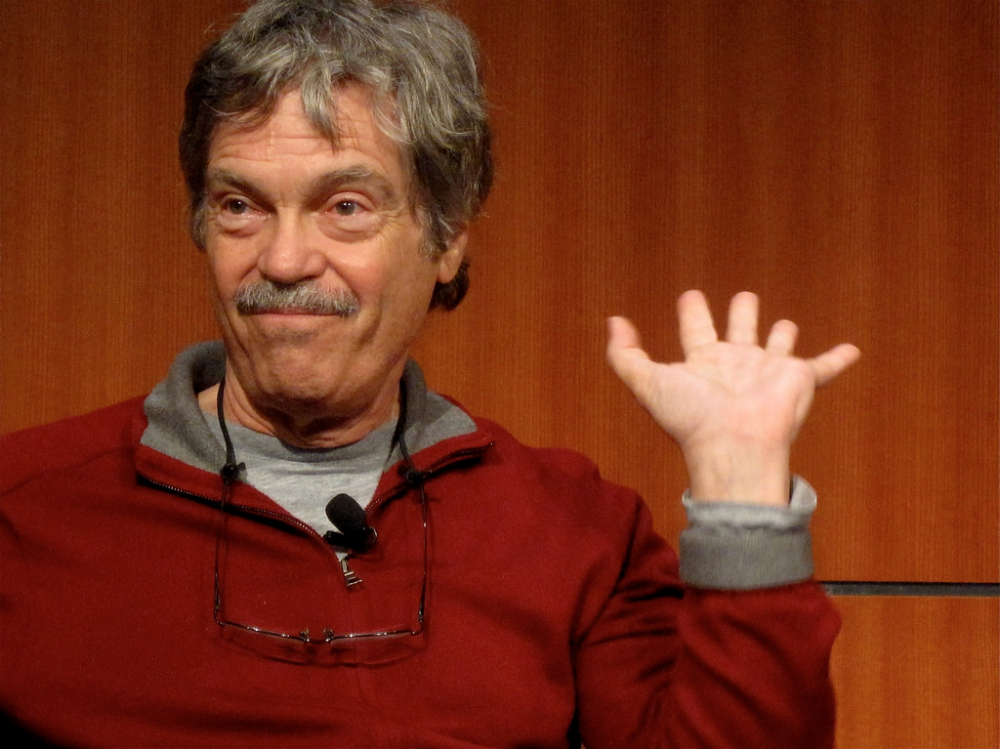
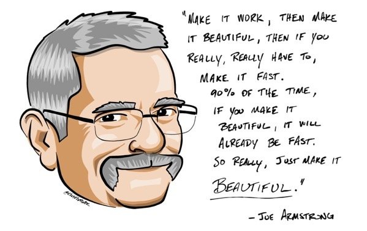
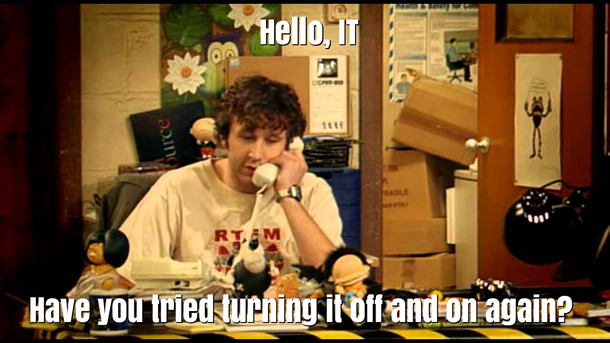

Akka
Конкурентни модели
ФП неизбежно ги подпомага
Актьорски модел ≈ ООП

Актьорски модел ≈ ООП
“I thought of objects being like biological cells and/or individual computers on a network, only able to communicate with messages… OOP to me means only messaging, local retention and protection and hiding of state-process, and extreme late-binding of all things.” – Alan Kay
Актьорски модел според Карл Хюит
- Математически модел за конкурентни процеси
- Актьорите като универсиални изчислителни примитиви
- Хюит го разглежда като модел на изчисление отвъд модела на Тюринг
- Моделиращ недетерминизма на околния свят
Актьори
- Всеки актьор изпълнява функционална/Тюринг програма
- Всеки актьор си има “адрес”, на който могат да бъдат изпращани съобщения
- Програмата се нарича “поведение” и се задейства при получаване на съобщение
- Изходът от поведението, обработило съобщението, съдържа:
- Поведението, което ще бъде изпълнено при следващото съобщение
- Списък от актьори, които да бъдат създадени, и начално поведение за всеки от тях
- Списък от съобщения и съответни адреси на получатели, които те да бъдат изпратени
С други думи
Актьори – недетерминизъм
- Поведението на актьора е детерминирано
- Изпращането на съобщения не. те:
- могат да бъдат изгубени – няма гаранция, че ще стигнат до получателя
- могат да пристигнат в произволен ред
- пристигат след неопределено време
- моделират недетерминизма на физическия свят
Erlang


akka (демо)
Fault tolerance
Making Reliable Distributed Systems in the Presence of Software Errors
by Joe Armstrong
Supervision tree

Supervision tree

Supervision tree